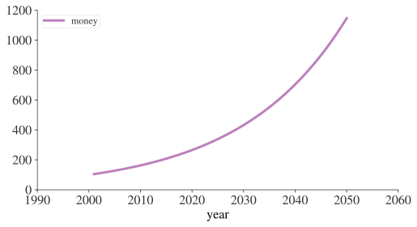
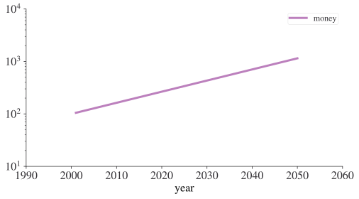
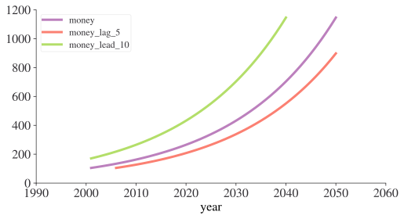
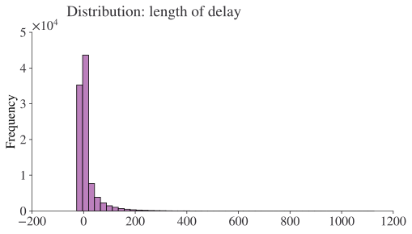
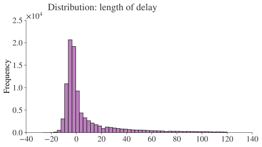

import pandas as pd
flights = pd.read_parquet(
"https://github.com/aeturrell/coding-for-economists/blob/main/data/flights.parquet?raw=true"
)Numbers
Introduction
In this chapter, you’ll learn useful tools for creating and manipulating numeric vectors. We’ll start by going into a little more detail of .count() before diving into various numeric transformations. You’ll then learn about more general transformations that can be applied to other types of column, but are often used with numeric column. Then you’ll learn about a few more useful summaries.
Prerequisites
This chapter mostly uses functions from pandas, which you are likely to already have installed bu you can install using pip install pandas in the terminal. We’ll use real examples from nycflights13, as well as toy examples made with fake data.
Let’s first load up the NYC flights data (note that this is not a tiny file so will take a moment to load from the internet)
Counts
It’s surprising how much data science you can do with just counts and a little basic arithmetic, so pandas strives to make counting as easy as possible with .count() and .value_counts(). The former just provides a straight count of all the non NA items:
flights["dest"].count()np.int64(100000)The latter provides a count broken down by type:
flights["dest"].value_counts()dest
ORD 5263
ATL 5085
LAX 4824
BOS 4504
MCO 4173
...
HDN 3
EYW 3
ANC 2
LEX 0
LGA 0
Name: count, Length: 105, dtype: int64This is automatically sorted in order of the most common category. You can perform the same computation “by hand” with groupby(), agg() and then using the count function. This is useful because it allows you to compute other summaries at the same time:
(
flights.groupby(["dest"], observed=False)
.agg(
mean_delay=("dep_delay", "mean"),
count_flights=("dest", "count"),
)
.sort_values(by="count_flights", ascending=False)
)| mean_delay | count_flights | |
|---|---|---|
| dest | ||
| ORD | 14.410605 | 5263 |
| ATL | 12.158762 | 5085 |
| LAX | 9.867779 | 4824 |
| BOS | 8.389554 | 4504 |
| MCO | 10.950060 | 4173 |
| ... | ... | ... |
| HDN | 22.333333 | 3 |
| EYW | -8.000000 | 3 |
| ANC | 0.000000 | 2 |
| LEX | NaN | 0 |
| LGA | NaN | 0 |
105 rows × 2 columns
Note that a weighted count is just a sum. For example you could “count” the number of miles each plane flew:
(flights.groupby("tailnum", observed=False).agg(miles=("distance", "sum")))| miles | |
|---|---|
| tailnum | |
| D942DN | 0 |
| N0EGMQ | 68338 |
| N10156 | 36245 |
| N102UW | 6399 |
| N103US | 6946 |
| ... | ... |
| N997DL | 11744 |
| N998AT | 3477 |
| N998DL | 23594 |
| N999DN | 15683 |
| N9EAMQ | 56803 |
4043 rows × 1 columns
You can count missing values by combining sum() and isnull(). In the flights dataset this represents flights that are cancelled. Note that because there isn’t a simple string name for applying .isnull() followed by .sum() (unlike just running sum, which would be given by the string “sum”), we need to use a lambda function in the below:
(
flights.groupby("dest", observed=False).agg(
n_cancelled=("dep_time", lambda x: x.isnull().sum())
)
)| n_cancelled | |
|---|---|
| dest | |
| ABQ | 0 |
| ACK | 0 |
| ALB | 6 |
| ANC | 0 |
| ATL | 109 |
| ... | ... |
| TPA | 20 |
| TUL | 2 |
| TVC | 3 |
| TYS | 19 |
| XNA | 9 |
105 rows × 1 columns
Numeric Transformations
Transformation functions have an output that is the same length as the input. The vast majority of transformation functions are either built into Python or come with the numerical package numpy. It’s impractical to list all the possible numerical transformations so this section will show the most useful ones.
Basic number arithmetic is achieved by + (addition), - (subtraction), * (multiplication), / (division), ** (powers), % (modulo), and @ (tensor product). Most of these functions don’t need a huge amount of explanation because you’ll be familiar with them already (and you can look up the others when you do need them).
When you have two numeric columns of equal length and you add or subtract them, it’s pretty obvious what’s going to happen. But we do need to talk about what happens when there is a variable involved that is not as long as the column. This is important for operations like flights.assign(air_time = air_time / 60) because there are 336,776 numbers on the left of / but only one on the right. In this case, pandas will understand that you’d like to divide all values of air time by 60. This is sometimes called ‘broadcasting’. Below is a digram that tries to explain what’s going on:

You can find out much more about broadcasting on the numpy documentation. pandas is built on top of numpy and inherits some of its functionality.
When operating on two columns, pandas compares their shapes element-wise. Two columns are compatible when they are equal, or one of them is a scalar. If these conditions are not met, you will get an error.
Minimum and Maximum
The arithmetic functions do what you’d expect.
flights["distance"].max()np.int64(4983)Sometimes, you’d like to look at the maximum or minimum value across rows or columns. As often is the case with pandas, you can specify rows or columns to apply functions to by passing axis=0 (index) or axis=1 (columns) to that function. The axis designation can be confusing: remember that you are asking which dimension you wish to aggregate over, leaving you with the other dimension. So if we wish to find the minimum in each row, we aggregate / collapse columns, so we need to pass axis=1.
df = pd.DataFrame({"x": [1, 5, 7], "y": [3, 2, pd.NA]})
df| x | y | |
|---|---|---|
| 0 | 1 | 3 |
| 1 | 5 | 2 |
| 2 | 7 | <NA> |
Now let’s find the min by row:
df.min(axis=1)0 1
1 2
2 7
dtype: objectModular arithmetic
Modular arithmetic is the technical name for the type of math you do on whole numbers, i.e. division that yields a whole number and a remainder. In Python, // does integer division and % computes the remainder:
print([x for x in range(1, 11)])
print("divided by 3 gives")
print("remainder:")
print([x % 3 for x in range(1, 11)])
print("divisions:")
print([x // 3 for x in range(1, 11)])[1, 2, 3, 4, 5, 6, 7, 8, 9, 10]
divided by 3 gives
remainder:
[1, 2, 0, 1, 2, 0, 1, 2, 0, 1]
divisions:
[0, 0, 1, 1, 1, 2, 2, 2, 3, 3]Modular arithmetic is handy for the flights dataset, because we can use it to unpack the sched_dep_time variable into and hour and minute:
flights.assign(
hour=lambda x: x["sched_dep_time"] // 100,
minute=lambda x: x["sched_dep_time"] % 100,
)| year | month | day | dep_time | sched_dep_time | dep_delay | arr_time | sched_arr_time | arr_delay | carrier | flight | tailnum | origin | dest | air_time | distance | hour | minute | time_hour | |
|---|---|---|---|---|---|---|---|---|---|---|---|---|---|---|---|---|---|---|---|
| 114018 | 2013 | 2 | 4 | 1032.0 | 924.0 | 68.0 | 1222.0 | 1118 | 64.0 | EV | 4234 | N14148 | EWR | STL | 153.0 | 872 | 9.0 | 24.0 | 2013-02-04 14:00:00+00:00 |
| 314547 | 2013 | 9 | 6 | 1900.0 | 1903.0 | -3.0 | 2008.0 | 2034 | -26.0 | EV | 4195 | N14125 | EWR | BNA | 95.0 | 748 | 19.0 | 3.0 | 2013-09-06 23:00:00+00:00 |
| 49815 | 2013 | 10 | 25 | 1108.0 | 1115.0 | -7.0 | 1241.0 | 1300 | -19.0 | EV | 5273 | N615QX | LGA | PIT | 55.0 | 335 | 11.0 | 15.0 | 2013-10-25 15:00:00+00:00 |
| 40120 | 2013 | 10 | 15 | 709.0 | 710.0 | -1.0 | 826.0 | 845 | -19.0 | AA | 305 | N593AA | LGA | ORD | 109.0 | 733 | 7.0 | 10.0 | 2013-10-15 11:00:00+00:00 |
| 37559 | 2013 | 10 | 12 | 758.0 | 800.0 | -2.0 | 1240.0 | 1003 | NaN | 9E | 3353 | N925XJ | JFK | DTW | NaN | 509 | 8.0 | 0.0 | 2013-10-12 12:00:00+00:00 |
| ... | ... | ... | ... | ... | ... | ... | ... | ... | ... | ... | ... | ... | ... | ... | ... | ... | ... | ... | ... |
| 276666 | 2013 | 7 | 28 | 1949.0 | 1722.0 | 147.0 | 2137.0 | 1847 | 170.0 | EV | 4187 | N29917 | EWR | BNA | 116.0 | 748 | 17.0 | 22.0 | 2013-07-28 21:00:00+00:00 |
| 25985 | 2013 | 1 | 30 | NaN | 1555.0 | NaN | NaN | 1810 | NaN | EV | 3820 | N12563 | EWR | SDF | NaN | 642 | 15.0 | 55.0 | 2013-01-30 20:00:00+00:00 |
| 223861 | 2013 | 6 | 2 | NaN | 1500.0 | NaN | NaN | 1722 | NaN | EV | 4971 | N600QX | LGA | CHS | NaN | 641 | 15.0 | 0.0 | 2013-06-02 19:00:00+00:00 |
| 42138 | 2013 | 10 | 17 | 821.0 | 825.0 | -4.0 | 1136.0 | 1148 | -12.0 | UA | 397 | N554UA | JFK | SFO | 336.0 | 2586 | 8.0 | 25.0 | 2013-10-17 12:00:00+00:00 |
| 50760 | 2013 | 10 | 26 | 1215.0 | 1200.0 | 15.0 | 1325.0 | 1312 | 13.0 | DL | 2451 | N648DL | JFK | BOS | 40.0 | 187 | 12.0 | 0.0 | 2013-10-26 16:00:00+00:00 |
100000 rows × 19 columns
Logarithms
Logarithms are an incredibly useful transformation for dealing with data that ranges across multiple orders of magnitude. They also convert exponential growth to linear growth. For example, take compounding interest — the amount of money you have at year + 1 is the amount of money you had at year multiplied by the interest rate. That gives a formula like money = starting * interest ** year:
import numpy as np
starting = 100
interest = 1.05
money = pd.DataFrame(
{"year": 2000 + np.arange(1, 51), "money": starting * interest ** np.arange(1, 51)}
)
money.head()| year | money | |
|---|---|---|
| 0 | 2001 | 105.000000 |
| 1 | 2002 | 110.250000 |
| 2 | 2003 | 115.762500 |
| 3 | 2004 | 121.550625 |
| 4 | 2005 | 127.628156 |
If you plot this data, you’ll get an exponential curve:
money.plot(x="year", y="money");
Log transforming the y-axis gives a straight line:
money.plot(x="year", y="money", logy=True);
This a straight line because log(money) = log(starting) + n * log(interest) matches the pattern for a line, y = m * x + b. This is a useful pattern: if you see a (roughly) straight line after log-transforming the y-axis, you know that there’s underlying exponential growth.
If you’re log-transforming your data you have a choice of a lot of logarithms provided by numpy but there are three ones you’ll want to commonly use: assuming you’ve imported it using import numpy as np, you have np.log() (the natural log, base e), np.log2() (base 2), and np.log10() (base 10).
The inverse of log() is np.exp(); to compute the inverse of np.log2() or np.log10() you’ll need to use 2** or 10**.
Rounding
To round to a specific number of decimal places, use .round(n) where n is the number of decimal places that you wish to round to.
money.head().round(2)| year | money | |
|---|---|---|
| 0 | 2001 | 105.00 |
| 1 | 2002 | 110.25 |
| 2 | 2003 | 115.76 |
| 3 | 2004 | 121.55 |
| 4 | 2005 | 127.63 |
This can also be applied to individual columns or differentially to columns via a dictionary:
money.head().round({"year": 0, "money": 1})| year | money | |
|---|---|---|
| 0 | 2001 | 105.0 |
| 1 | 2002 | 110.2 |
| 2 | 2003 | 115.8 |
| 3 | 2004 | 121.6 |
| 4 | 2005 | 127.6 |
.round(n) rounds to the nearest 10**(-n) so n = 2 will round to the nearest 0.01. This definition is useful because it implies .round(-2) will round to the nearest hundred, which indeed it does:
money.tail().round({"year": 0, "money": -2})| year | money | |
|---|---|---|
| 45 | 2046 | 900.0 |
| 46 | 2047 | 1000.0 |
| 47 | 2048 | 1000.0 |
| 48 | 2049 | 1100.0 |
| 49 | 2050 | 1100.0 |
Sometimes, you’ll want to round according to significant figures rather than decimal places. There’s not a really easy way to do this but you can define a custom function to do it. Here’s an example of rounding to 2 significant figures (change the 2 in the below to round to a different number of significant figures):
money["money"].head().apply(lambda x: float(f'{float(f"{x:.2g}"):g}'))0 100.0
1 110.0
2 120.0
3 120.0
4 130.0
Name: money, dtype: float64If you have an array or list of numbers outside of a data frame, you can use the numpy function
np.round([1.5, 2.5, 1.4])array([2., 2., 1.])numpy has both .floor() and .ceil() methods too
real_nums = 100 * np.random.random(size=10)
real_numsarray([60.1359934 , 47.42823815, 32.9581122 , 34.22278615, 53.90146376,
65.37797432, 87.88950937, 82.42769353, 10.69531629, 21.79640189])np.ceil(real_nums)array([61., 48., 33., 35., 54., 66., 88., 83., 11., 22.])np.floor(real_nums)array([60., 47., 32., 34., 53., 65., 87., 82., 10., 21.])Remember that you can always apply numpy functions to pandas data frame columns like so:
money["money"].head().apply(np.ceil)0 105.0
1 111.0
2 116.0
3 122.0
4 128.0
Name: money, dtype: float64Cumulative and Rolling Aggregates
pandas has several cumulative functions, including .cumsum(), .cummax() and .cummin(), and .cumprod().
money["money"].tail().cumsum()45 943.425818
46 1934.022928
47 2974.149892
48 4066.283205
49 5213.023184
Name: money, dtype: float64As ever, this can be applied across rows too by passing axis=1.
General transformations
The following sections describe some general transformations that are often used with numeric vectors, but which can be applied to all other column types.
Ranking
pandas’ rank function is .rank(). Let’s look back at the data we made earlier and rank it:
df| x | y | |
|---|---|---|
| 0 | 1 | 3 |
| 1 | 5 | 2 |
| 2 | 7 | <NA> |
df.rank()| x | y | |
|---|---|---|
| 0 | 1.0 | 2.0 |
| 1 | 2.0 | 1.0 |
| 2 | 3.0 | NaN |
Of course, there’s no change here because the items were already ranked! We can also do a pct rank by passing the keyword argument pct=True.
df.rank(pct=True)| x | y | |
|---|---|---|
| 0 | 0.333333 | 1.0 |
| 1 | 0.666667 | 0.5 |
| 2 | 1.000000 | NaN |
Offsets and Shifting
Offsets allow you to ‘roll’ columns up and down relative to their original position, ie to offset their location relative to the index. The function that does this is called shift() and it produces leads or lags depending on whether you use positive or negative values respectively. Remember that a lead is going to shift the pattern in the data to the left when plotted against the index, while the lag is going to shift patterns to the right. Leads and lags are particularly useful for time series data (which we haven’t yet seen).
Let’s see an example of offsets with the money data frame from earlier:
money["money_lag_5"] = money["money"].shift(5)
money["money_lead_10"] = money["money"].shift(-10)
money.set_index("year").plot();
Exercises
In the flights data, find the 10 most delayed flights using a ranking function.
Which plane (
"tailnum") has the worst on-time record?What time of day should you fly if you want to avoid delays as much as possible?
For each destination, compute the total minutes of delay. For each flight, compute the proportion of the total delay for its destination.
Delays are typically temporally correlated: even once the problem that caused the initial delay has been resolved, later flights are delayed to allow earlier flights to leave. Using
.shift(), explore how the average flight delay for an hour is related to the average delay for the previous hour.Look at each destination. Can you find flights that are suspiciously fast? (i.e. flights that represent a potential data entry error). Compute the air time of a flight relative to the shortest flight to that destination. Which flights were most delayed in the air?
Find all destinations that are flown by at least two carriers. Use those destinations to come up with a relative ranking of the carriers based on their performance for the same destination.
More Useful Summary Statistics
We’ve seen how useful .mean(), .count(), and .value_counts() can be for analysis. pandas has a great many more built-in summary statistics functions, however. These include .median() (you may find it interesting to compare the mean vs the median when looking at the hourly departure delay in the flights data), .mode(), .min(), and .max().
A class of useful summary statistics are provided by the .quantile() function, which is the same as median() for .quantile(0.5). The quantile at x% is the value that x% of values are below. (Note that under this definition, .quantile(1) will be the same as .max().) Let’s see an example with the 25th percentile.
money["money"].quantile(0.25)np.float64(190.92197566022773)Sometimes you don’t just want one percentile, but a bunch of them. pandas makes this very easy by allowing you to pass a list of quantiles:
money["money"].quantile([0, 0.25, 0.5, 0.75])0.00 105.000000
0.25 190.921976
0.50 347.101381
0.75 630.945970
Name: money, dtype: float64Spread
Sometimes you’re not so interested in where the bulk of the data lies, but how it is spread out. Two commonly used summaries are the standard deviation, .std(), and the inter-quartile range, which you can compute from the relevant quantiles, ie it’s the quantile at 75% minus the quantile at 25% and gives you the range that contains the middle 50% of the data.
We can use this to reveal a small oddity in the flights data. You might expect that the spread of the distance between origin and destination to be zero, since airports are always in the same place. But the code below makes it looks like one airport, EGE, might have moved.
(
flights.groupby(["origin", "dest"], observed=False)
.agg(
distance_sd=("distance", lambda x: x.quantile(0.75) - x.quantile(0.25)),
count=("distance", "count"),
)
.query("distance_sd > 0")
)| distance_sd | count | ||
|---|---|---|---|
| origin | dest | ||
| EWR | EGE | 1.0 | 31 |
| JFK | EGE | 1.0 | 26 |
Distributions
It’s worth remembering that all of the summary statistics described above are a way of reducing the distribution down to a single number. This means that they’re fundamentally reductive, and if you pick the wrong summary, you can easily miss important differences between groups. That’s why it’s always a good idea to visualise the distribution of values as well as using aggregate statistics.
The plot below shows the overall distribution of departure delays. The distribution is so skewed that we have to zoom in to see the bulk of the data. This suggests that the mean is unlikely to be a good summary and we might prefer the median instead.
flights["dep_delay"].plot.hist(bins=50, title=" Distribution: length of delay");
flights.query("dep_delay <= 120")["dep_delay"].plot.hist(
bins=50, title=" Distribution: length of delay"
);
Two histograms of "dep_delay". On the former, it’s very hard to see any pattern except that there’s a very large spike around zero, the bars rapidly decay in height, and for most of the plot, you can’t see any bars because they are too short to see. On the latter, where we’ve discarded delays of greater than two hours, we can see that the spike occurs slightly below zero (i.e. most flights leave a couple of minutes early), but there’s still a very steep decay after that.
Don’t be afraid to explore your own custom summaries specifically tailored for the data that you’re working with. In this case, that might mean separately summarising the flights that left early vs the flights that left late, or given that the values are so heavily skewed, you might try a log-transformation. Finally, don’t forget that it’s always a good idea to include the number of observations in each group when creating summaries.
Exercises
Brainstorm at least 5 different ways to assess the typical delay characteristics of a group of flights. Consider the following scenarios:
- A flight is 15 minutes early 50% of the time, and 15 minutes late 50% of the time.
- A flight is always 10 minutes late.
- A flight is 30 minutes early 50% of the time, and 30 minutes late 50% of the time.
- 99% of the time a flight is on time. 1% of the time it’s 2 hours late.
Which do you think is more important: arrival delay or departure delay?
Which destinations show the greatest variation in air speed?
Create a plot to further explore the adventures of EGE. Can you find any evidence that the airport moved locations?